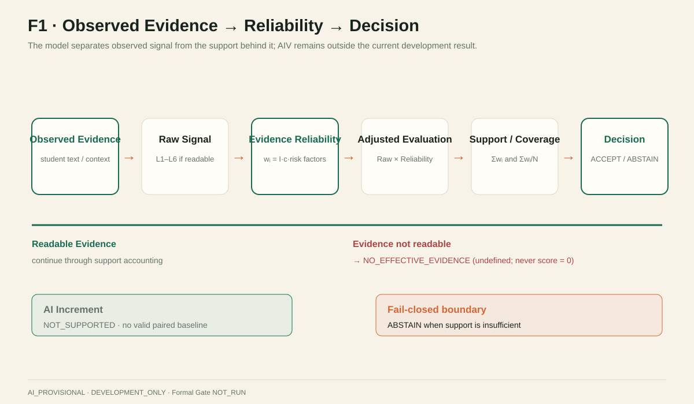
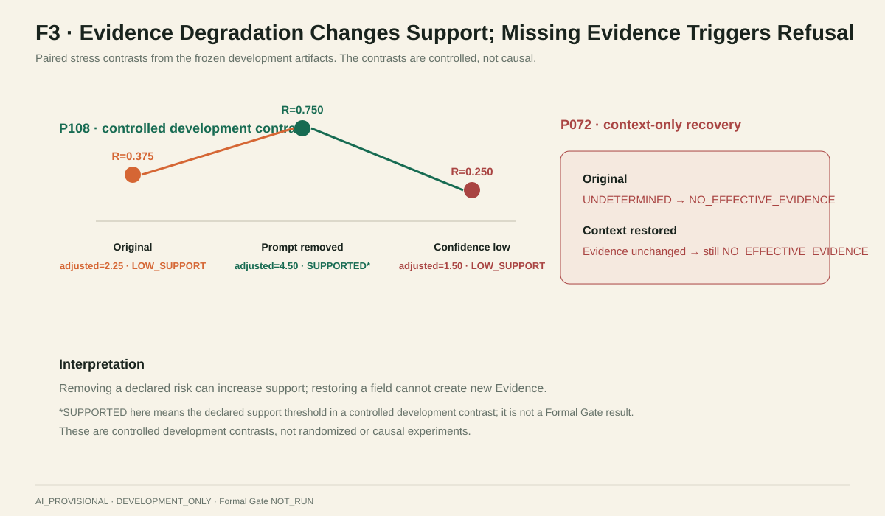
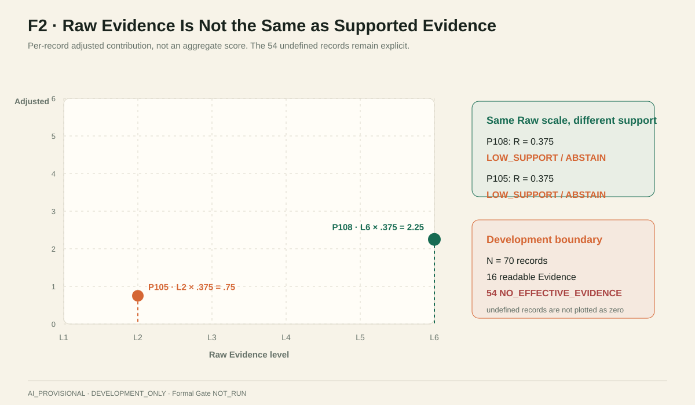
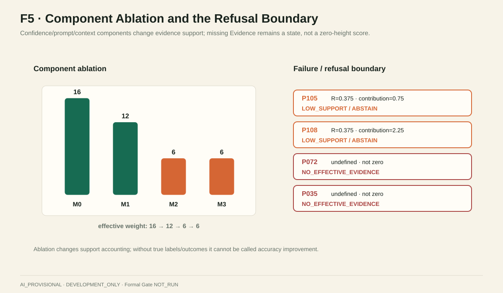
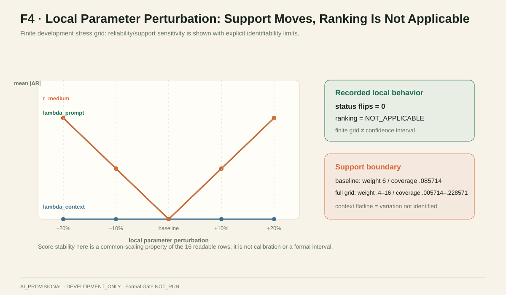
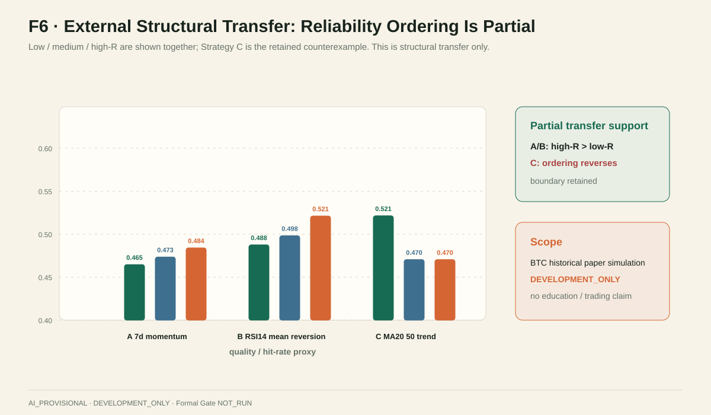

研究问题 · RESEARCH QUESTION
这个分数，到底有多少证据值得相信？
观察到的结果，不等于可靠证据
观察到的结果 ≠ 可靠证据（Observed Result ≠ Reliable Evidence）。一个结果有多高，和我们有多大把握解释这个结果，不是一回事。当证据缺失、冲突或低可信时，原始表现（Raw Signal）不应被直接当作可靠结论。
70
开发记录（Development Records）
全部来自开发切片，未经正式验证。
16
可判读证据（Readable Evidence）
能编码 L1–L6 层级的记录。
54
无有效证据（No Effective Evidence）
不是 54 个零分，而是没有足够证据进行可靠数值判断。
我们把「表现水平（Performance）」和「证据支持度（Evidence Support）」拆成两个量：前者回答「有多高」，后者回答「有多可信」。分数高、但支撑它的证据不足，就不能被同样强度地解释。
核心模型 · CORE MODEL
从观察到决策：一条可审计链路
每条观察拆成「表现有多高」与「证据有多可信」两个量
输入
可观察证据
Observed Evidence任务 / 学生 Bloom 层级、置信度、提示与上下文标志
→
信号
原始表现
Raw Signal可判读则编码 L1–L6；不可判读不强行编码
→
支持
证据可靠性
Evidence Reliabilitywi：确定性支持权重（不是概率）
→
调整
调整后评价
Adjusted EvaluationAdjustedi = Rawi × wi
→
汇总
有效支持 / 覆盖率
Support / CoverageS = Σwi；Ceff = Σwi/N，N=70
→
判定
决策
Decision接受 / 暂缓判断 / 无有效证据
wi = I(observablei) · ci · (1 − λprompt·pi) · (1 − λcontext·ti)
证据可靠性（Reliability）由四个因子相乘：可判读性 × 标注置信度 × AI 提示风险 × 上下文风险。后两项是风险折减。可靠性是支持权重，不是概率，也不是因果系数。
接受
ACCEPT
支持规则通过才接受。
暂缓判断
ABSTAIN
证据不足或冲突时暂缓判断。
无有效证据
NO_EFFECTIVE_EVIDENCE
权重为零或不可判读 —— 不填 0 分。
交互演示 · 冻结公式复算（P108，确定性重放）
以真实开发案例 P108（原始表现 = L6，置信度 medium，上下文未截断）为起点，只切换「是否带提示风险」。这是冻结公式对输入字段的机械响应，不是新实验、不是实时 AI 分析、不构成研究证据。
提示风险（prompt_induced）：
证据可靠性 Reliability w
0.375
调整后 Adjusted（6 × w）
2.25
决策 Decision
支持不足 → 暂缓判断（ABSTAIN）

失败案例 · FAILURE CASES
高原始表现，不代表高可信
没有证据，不等于表现为零
P108 · 高表现 / 低支持
原始表现 Raw = L6（最高层级）
证据可靠性 Reliability = 0.375
调整后 Adjusted = 2.25（6 × 0.375）
决策 Decision = 支持不足 → 暂缓判断（ABSTAIN）
P072 · 无有效证据
原始表现 Raw = 不可判读（未编码）
证据可靠性 Reliability = 0
调整后 Adjusted = null（不填 0）
决策 Decision = 无有效证据（NO_EFFECTIVE_EVIDENCE）
P035 · 无有效证据
原始表现 Raw = 不可判读（未编码）
证据可靠性 Reliability = 0
调整后 Adjusted = null（不填 0）
决策 Decision = 无有效证据（NO_EFFECTIVE_EVIDENCE）


核心发现 · CORE FINDING
分数没有变化，但支撑它的证据明显减少
分数稳定 ≠ 证据支撑稳定
16 → 12 → 6 → 6
有效支持（Support · Σw）
M0 → M1 → M2 → M3，证据支撑下降。
22.86% → 8.57%
有效覆盖率（Coverage · Σw / N）
0.228571 → 0.171429 → 0.085714 → 0.085714，分母 N=70。
3.5625 → 3.5625
分数（Score · ABL）
全程不变 —— 公共缩放退化，不是提升。伴随 HOT 0.375 · Gap 1.125。
组件消融 · Ablation（M0 → M3）
| 模型 | 组件 | 分数（ABL） | 有效支持（Σw） | 覆盖率（N=70） |
|---|---|---|---|---|
| M0 | 无校正（Raw-only） | 3.5625 | 16 | 0.228571 |
| M1 | + 置信度 confidence | 3.5625 | 12 | 0.171429 |
| M2 | + 提示风险 prompt | 3.5625 | 6 | 0.085714 |
| M3 | + 上下文风险 context | 3.5625 | 6 | 0.085714 |
提示风险模块承担主要支持下降（M1→M2）；上下文模块在当前可判读记录中无变异（M2 = M3，不可识别独立效应）。

五条验证路径 · VALIDATION PATHS
五种方法，验证同一个问题
当分数看起来稳定时，证据支持是否也稳定？
基线对比（Baseline）
关键结果：四模型分数均 3.5625；Raw-only 支持 16，主模型 6。
含义：可靠性层带来 Raw-only 没有的分级支持。
组件消融（Ablation）
关键结果：有效支持 16→12→6→6，分数恒 3.5625。
含义：组件确实改变支持记账，不是装饰。
参数敏感性（Sensitivity）
关键结果：±10%/±20% → 0 次状态翻转；693 网格 660 有定义 / 33 无定义。
含义：局部结构稳定；学生排名不适用。
失败案例（Failure Case）
关键结果：P108 L6 → 可靠性 0.375 → 暂缓判断；P072/P035 → 无有效证据。
含义：高表现 ≠ 高支持；证据缺失 ≠ 零分。
外部结构迁移（Structural Transfer）
关键结果：BTC n=1698：Gate 1、2 支持；Gate 3 当前证据不支持。
含义：结构可迁移（structural portability）。
机器学习对照（ML Challenger）
结论：没有足够证据选出 winner。指标不低（0.876 / 0.919 / 0.922），但正例仅 16 条、代理标签。

外部迁移与边界 · TRANSFER & LIMITS
结构可以迁移，预测优势没有被证明
外部结构迁移（Structural Transfer Only）
金融案例（BTC，n = 1698）只表达一件事：同一结构可以迁移 —— 原始表现 → 证据可靠性 → 调整后 → 接受 / 暂缓判断。失败结果必须保留。
Gate 1 · 支持
信息质量下降时，可靠性是否下降？是。
可靠性 0.6027 → 0.4077。
Gate 2 · 支持
低可靠性是否提高暂缓、降低覆盖？是。
覆盖率 0.3940 → 0.0012。
Gate 3 · 当前证据不支持
低可靠性决策是否误差更高？否。
低可靠误差 0.5248 vs 高可靠 0.5277（无改善）。

当前证据边界（Evidence Boundary）
现在能说
— 结构性结论、描述性结论
— 证据支持变化、拒判机制行为
现在不能说
— AI 提升学习效果、因果 AI 增量
— 准确率提升、交易优势、通用泛化
AI 临时标注 · AI_PROVISIONAL
仅开发版 · DEVELOPMENT_ONLY
尚未人工验证 · NOT_HUMAN_VALIDATED
人工复核 R1 0/70 · R2 0/70
正式验证门未运行 · FORMAL GATE NOT_RUN
AI 增量 · NOT_SUPPORTED
数字唯一来源：
outputs/final_results.json · paper/PAPER_NUMBER_LOCK.md。
图表：reports/visual_evidence/final/F1–F6。